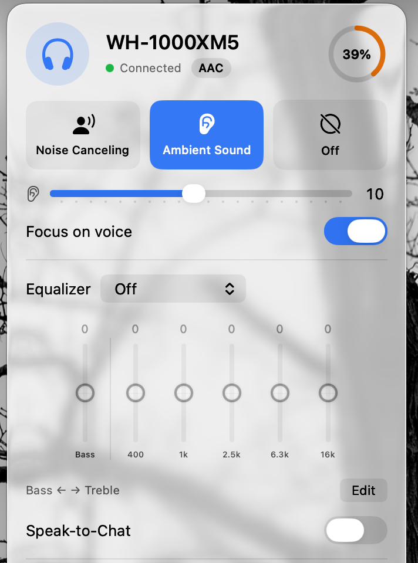
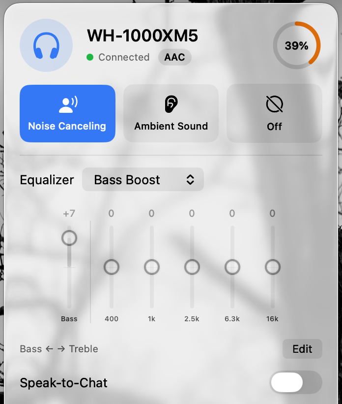

Sony WH-1000XM5 on Mac
Pair your headphones, change ANC and EQ from the menu bar, and work through connection problems.
Join the free betaStart with the Mac connection
- Install the beta (macOS 14 or later).
- Get Apple’s TestFlight app from the Mac App Store and open it once.
- Open the beta invitation above and choose Accept. Accepting alone does not install Headphone Control.
- In TestFlight, select Headphone Control and click Install, then Open. No Install button usually means the Mac is older than macOS 14 (Apple’s generic page says macOS 13, but this app needs 14).
- On first launch, click Allow when macOS asks for Bluetooth access.
- Pair the XM5. On the Mac, open System Settings → Bluetooth. If the headphones are already listed, connect them. Otherwise, put the XM5 in pairing mode: a new or reset pair does this when first turned on; if it already knows another device, hold the power button for about 5 seconds until the blue light flashes twice repeatedly. Then choose WH-1000XM5 → Connect on the Mac. Details are in Sony’s Mac pairing page.
- Open Headphone Control. Allow Bluetooth access if macOS asks. If you previously denied it, check System Settings → Privacy & Security → Bluetooth. Open the headphone icon in the menu bar.
- Check the device name. Look for WH-1000XM5 and Connected at the top of the panel. For music, also select the XM5 in System Settings → Sound → Output. Audio output and the app’s settings connection are separate checks.
The app’s demo mode uses sample data. A change in demo mode is not a hardware test.
Choose what you want to hear
- Noise Canceling
- Select it in the top row for ANC. The selected button is blue in these screenshots.
- Ambient Sound
- Select it to reveal the ambient level slider. Adjust the level while listening; try Focus on voice separately to hear the difference.
- Off
- Switches off ANC and ambient processing. It does not turn the headphones off or disconnect Bluetooth.
Make one change at a time and listen for the result. A highlighted button shows the app’s selected state; your listening check confirms what the headphones did.



With Ambient Sound selected
The level slider and Focus on voice appear below the mode buttons. Level 10 is the captured example, not a recommended setting.
Try a preset, then compare with Off
Keep the same track and volume while comparing settings. You do not need a custom curve to check that EQ is working.
- Open the Equalizer menu below noise control.
- Choose a preset. The real capture here shows Bass Boost; the Bass value is +7.
- Listen, then select Off for comparison.
- For custom adjustments, choose Edit below the bands and change one setting at a time.


All three images are existing screenshots from a real XM5 session, not a live recording. For the separate recorded demo, watch the app on YouTube.
Find the part that is not connecting
Start with the symptom you see. These checks help isolate a beta problem; they are not a guaranteed fix.
The XM5 is missing from Mac Bluetooth settings
Keep the headphones near the Mac, check that Bluetooth is on, and follow Sony’s Mac pairing instructions. Sony notes pairing mode ends after 5 minutes; if that happens, turn the XM5 off and start again. Open System Settings → Bluetooth and connect the XM5 there before scanning in Headphone Control.
Music works, but the app cannot find the XM5
Check the app’s Bluetooth permission in Privacy & Security → Bluetooth. Close the headphone control app on your phone while testing, then choose Scan again in Headphone Control. If needed, disconnect and reconnect the XM5 in Mac Bluetooth settings, then reopen Headphone Control.
If music still works but settings do not, include that distinction in your report.
The panel says Connected, but music is silent
Choose WH-1000XM5 in System Settings → Sound → Output, check the Mac and player volume, and start playback on the Mac. If a phone is also connected, pause playback there while testing. A settings connection does not confirm which device is supplying audio.
A noise mode changes back, or sound pauses when I speak
Note whether the change follows speech, a call or opening an app. Check Speak-to-Chat (Sony: hold two fingers on the touch panel to switch it on or off), plus any profiles or automatic rules you enabled in Headphone Control. Temporarily turn those off and try one manual mode change, then report whether it stays selected.
Music sounds flat or quiet during a call
When an app uses the XM5 microphone, macOS switches Bluetooth to a call mode with lower audio quality. Quit video call or chat apps, then reselect the XM5 in Control Center → Sound. Apple explains this here. This is a Bluetooth limitation, not an EQ setting.
EQ changes or reconnecting are inconsistent
Try one preset, compare with Off, then reconnect and repeat. Record what the app displayed and what you heard separately. If another device is connected, repeat once with only the Mac connected and include both results.
A short report that helps reproduce it
Include the app version and build shown in TestFlight. “Connected for music, but ANC did not change” is more useful than “doesn’t work.”
Headphones: Sony WH-1000XM5 Firmware (if known): Mac model / macOS version: Headphone Control version / build: Phone or second device connected: yes / no Mac Bluetooth connected: yes / no Music plays from the Mac: yes / no App shows Connected: yes / no ANC / ambient / EQ: what worked, what failed Steps to reproduce: Expected result: What happened: After reconnecting:
You can also use Send Beta Feedback in TestFlight or open a GitHub model report. No GitHub account is needed to email us.
For connection failures, optionally include Settings → About → Advanced: connection log from the app. Review it before sharing; GitHub issues are public.
Manufacturer help
For Bluetooth pairing and Mac audio settings, use the manufacturer’s instructions. Headphone Control’s menu bar controls are described separately above.
Weighing other Mac apps for Sony headphones? Read the comparison with SonyBridge and Open Sound Connect. For multipoint switching, call audio quality drops and XM4/XM6 testing, see Sony WH-1000XM4, XM5 & XM6 on Mac, or the XM5 on Zoom, Teams & Meet fix list.
Sony and Apple pages last checked on 16 November 2026.
- WH-1000XM5 battery percentage on Mac
- Sony: Pairing and connecting with a computer (Mac).
- Sony: Ambient Sound Mode. Sony notes that Ambient Sound settings changed in its app are stored in the headset.
- Apple: Connect a Bluetooth device with your Mac.
- Apple: Change the sound output settings on Mac.
- Apple: If sound quality is reduced with Bluetooth headphones.
ANC, EQ and model-specific help
For a focused walkthrough, see how to change Sony ANC and EQ on Mac. Start with Bluetooth audio, then verify each control separately. This app does not update headphone firmware; use Sony Sound Connect for that.
Looking for Sony Headphones Connect for Mac? · Compare the official iPhone app, macOS Bluetooth and Mac controllers.
Questions
Can I update Sony firmware with Headphone Control?
No. Use Sony Sound Connect on your phone for firmware updates. Headphone Control changes daily settings on a Mac.
Does the WH-1000XM5 test include the WF-1000XM5 earbuds?
No. Only the WH-1000XM5 over-ear model has been tested on real hardware. WF-1000XM5 and the other models remain untested.
Test status by model
| Model | Status | Guide |
|---|---|---|
| WH-1000XM5 | Developer-tested on hardware | Mac guide |
| WH-CH720N | Experimental · working per one user report | Mac guide |
| WH-1000XM4 | Experimental · hardware reports welcome | Mac guide |
| WH-1000XM6 | Experimental · hardware reports welcome | Mac guide |
| WF-1000XM4 | Experimental · hardware reports welcome | Mac guide |
| WF-1000XM5 | Experimental · hardware reports welcome | Mac guide |
| ULT WEAR | Experimental · hardware reports welcome | Mac guide |
| LinkBuds | Experimental · hardware reports welcome | Mac guide |
Statuses change only with a real result. Own one of these? Post what worked and what didn’t in Discussion #2.